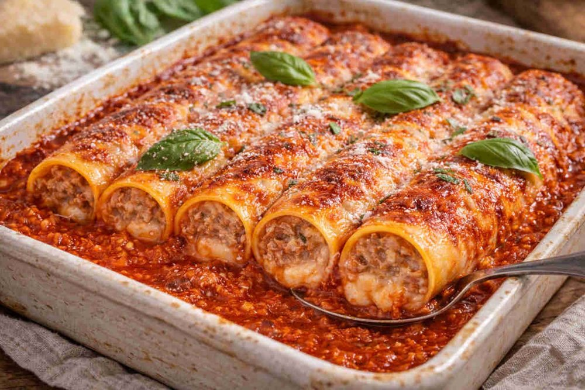

Massas
Cannelloni

Ingredientes
- 100 g de manteiga
- 1 cebola picada
- 2 dentes de alho amassados
- 150 g de patinho
- 100 g de lombo de porco
- ½ xícara de caldo de carne
- Sal e pimenta-do-reino a gosto
- ½ xícara de pão ralado
- ½ xícara de parmesão ralado
- ¼ xícara de requeijão
- 1 receita de Massa básica de macarrão
Modo de preparo
- Numa panela, aqueça a manteiga em fogo médio até derreter. Junte a cebola e o alho. Cozinhe até a cebola ficar transparente. Junte as carnes, deixe cozinhar até dourar de todos os lados.
- Acrescente o caldo de carne, abaixe o fogo, tampe a panela e continue o cozimento por 20 minutos. Tempere com sal e pimenta a gosto.
- Retire a carne da panela, passe na máquina de moer e leve de volta à panela, mexendo para misturar com o molho do cozimento. Passe a carne para uma tigela.
- Acrescente o pão, o parmesão e o requeijão. Misture bem e reserve.
- Prepare a Massa básica de macarrão como indicado na ficha.
- Abra a massa bem fino com um rolo de cozinha e corte em quadrados de 12 cm.
- Leve uma panela grande com bastante água com sal ao fogo. Quando estiver fervendo, cozinhe os quadrados de massa. Vá colocando os quadrados já cozidos sobre um pano de prato e enxugue.
- Espalhe o recheio sobre os quadrados já cozidos e enrole-os, formando os cannelloni.
- Arrume os cannelloni em uma travessa refratária untada e deixe esfriar completamente. Congele.
Observação
Para evitar que a massa grude durante o cozimento, coloque 2 colheres (sopa) de óleo na água do cozimento. Congelamento: embrulhe a travessa com os cannelloni em filme plástico, ou coloque em um saco plástico que feche hermeticamente; etiquete e congele. Descongelamento: em temperatura ambiente, ou na geladeira de um dia para o outro; cubra com o molho de sua preferência e leve ao forno para aquecer.